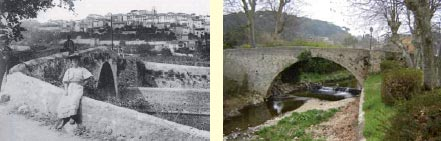
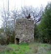
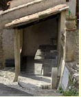
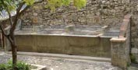
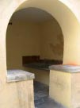
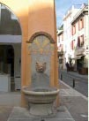
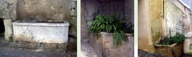

Le patrimoine vernaculaire - L'eau - BIOT
L’eau potable arriva dans le village des sources de la Baume au milieu du XIXe siècle par des conduites en plomb. A partir du début du XXe siècle, l’eau pompée par la Compagnie des Eaux arrive à Biot. En 1907, l’eau est dans le village, en 1908 aux Cabots, en 1912 aux Castellins et en 1942 aux Soulières. L’eau (dite eau agricole) est alors stockée dans les grands bassins cylindriques qui servaient à l’arrosage et que l’on voit encore dans la campagne de Biot. L’arrivée de l’eau pompée fait passer l’économie agricole d’une culture céréalière à une culture maraîchère. Aux Soulières, trois grandes propriétés se consacraient à la culture des légumes. Les autres terrains sont convertis à l’horticulture dans les années 1950.

Vieux Pont de la Brague
Aux XVIIe - XVIII siècles, sa construction permet le désenclavement et une communication régulière avec Antibes et la plage, d’où sont embarquées les poteries. Constitué de pierres de calcaire hourdées, ce pont franchit la rivière de la Brague par un arc plein cintre. Il accueille à son niveau supérieur, un passage piéton dont le parapet est en pierre. Il ne fut plus utilisé au début du XXe siècle, après la construction du Pont Muratore (achevé en 1934). Le premier lavoir de Biot se trouvait à ses côtés. Il fut recouvert par le réaménagement des berges afin de construire le nouveau pont.
L’eau de la Brague, souvent détournée par un béal créant une chute d’eau, fournissait la force motrice des moulins et scieries. Un béal est en Provence un petit canal de dérivation destiné à l’irrigation. Il en existait plusieurs à Biot.
Le béal «des Tines» est ainsi appelé parce que les scieries et moulins qu’il actionnait étaient rassemblés au quartier des Tines. Il débutait sur la rive gauche de la Brague. Le long de son parcours, il était utilisé comme lavoir au sud du carrefour de la route de la Mer et de la vieille route d’Antibes avant de s’engager sous cette dernière. Il actionnait ensuite la scierie pour pierre à four et immédiatement après il faisait fonctionner le moulin à huile puis le moulin de la «Recènso». Le béal s’étalait ensuite sur la plaine de la Brague pour irriguer les prairies de la plaine du quartier d’Andon et ses jardins potagers.
L’amorce du béal du pont de la Brague se situait sur la rive droite de la Brague, à environ 800m de la Chapelle Saint-Jean. Il actionnait le moulin dit du «Pont de la Brague» et se déversait ensuite dans la Brague.
Le béal du Moulin Neuf s’amorçait sur la rive gauche de la Brague immédiatement en amont du vieux pont; il longeait la Brague sur sa rive gauche, puis actionnait le moulin neuf, actuellement propriété du golf de la Bastide du Roy.
Noria - Puits à roue
Un puits à roue (noria) est un engrenage mû par un âne ou un mulet qui fait tourner une chaîne sans fi n. La roue (luno) porte des godets en terre cuite (ou en fer), elle monte l’eau et la déverse dans une auge, un abreuvoir ou un lavoir. A Biot, il y eut dans le passé de nombreuses norias. On peut encore en voir au moins cinq dont une à la Savonnière en bord de Brague, une autre sous le lierre dans la cour du bâtiment à l’angle de la Fontannette (côté Pont Muratore).

Lavoir des Migraniers
Installé dans un espace reculé, près de la calade des Migraniers, ce lavoir du XXe constitue un petit espace, couvert d’une charpente de tuiles canal. Il possède de larges bassins de pierres. Des robinets permettent d’alimenter en eau les bassins. Il est abrité par un pan de toiture, porté par deux poteaux en bois, d’un côté et adossé à un mur de pierre, de l’autre. A proximité se situe une fontaine, c’est une borne verticale dotée d’un bouton poussoir d’où coule l’eau pour passer dans une grille.

Lavoir des Tines
Situé à proximité de la Porte des Tines, le lavoir présente quatre bassins de tailles différentes, démarqués les uns des autres par des pierres, posées sur les bacs en pierre monolithique. Il est encadré, à ses extrémités, par de petits murs de pierres. Le lavoir fait partie d’un ensemble urbain : la tour de la Garde, la porte des Tines et un espace végétalisé.

Lavoir de l’Église
Il apparaît de manière plus discrète que les autres lavoirs de la commune. Une entrée cintrée, maçonnée permet d’y accéder et ouvre sur un petit espace où un lavoir est adossé à un parement.

Fontaine
Située Place de la Chapelle, la fontaine publique, fin XIXe, est accolée à un des murs qui renferme le musée d’Histoire et de la Céramique biotoise. Elle a été restaurée. La fontaine est constituée d’un pied cylindrique sur lequel repose une vasque. Un élément vertical maçonné accueille une tête de lion où se trouve un tuyau métallique. Cet élément vertical se termine par un arc en brique composé autour d’un bas relief coloré.

Abreuvoirs
Deux abreuvoirs étaient situés calade du cimetière, non loin des fontaines qui alimentaient le village. Lorsqu’en 1907, l’eau de la «Compagnie» arrive dans le village, on installe de nouvelles fontaines et deux abreuvoirs construits en briques de terre cuite. Ces abreuvoirs, situés dans les calades d’accès au village, sur le passage des hommes, ne sont plus alimentés aujourd’hui et servent de jardinières.
